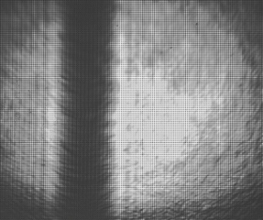
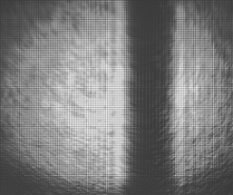
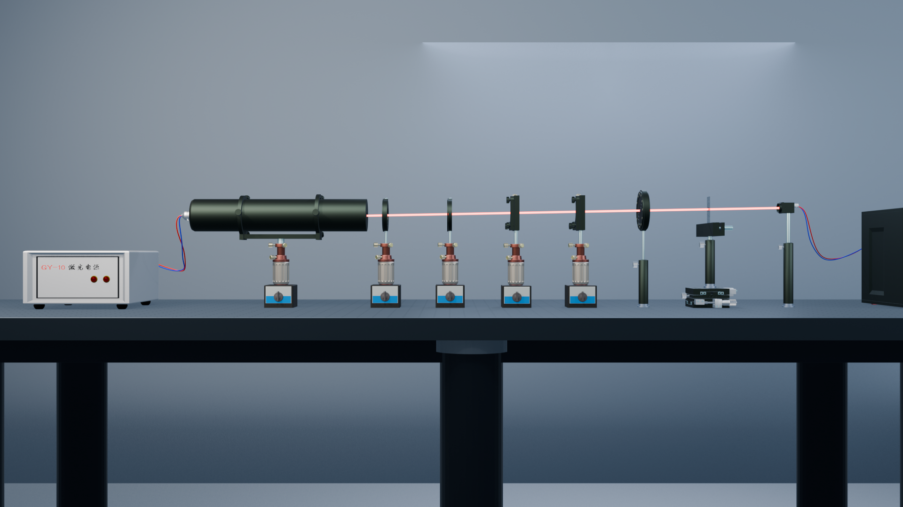
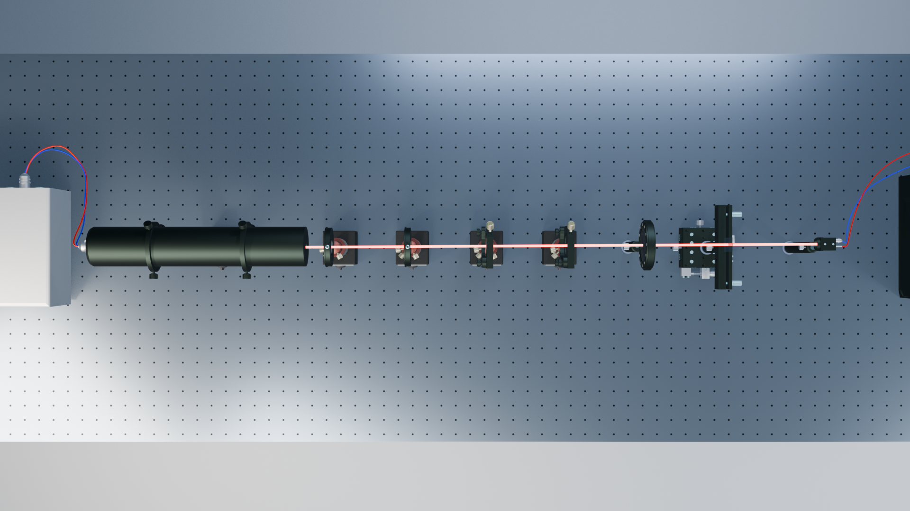

第一站 · 点亮
稳定的光，让相遇有迹可循。
实验从相干照明开始。传播到样品后，一部分光继续前行，另一部分受到样品影响而发生散射。两部分光将在记录面相遇。
记住这一点 这里的“参考光”是未被样品明显扰动、继续传播的光。
一场可以亲手参与的光学探索
一束光，如何记录世界？
沿着光的路径，从照亮样品，到留下干涉条纹，再到理解图像中的线索。四个观察，走近 Gabor 同轴全息。
先点亮图中的光源，再跟随它逐站探索。
一张看不懂的照片？
普通照片直接呈现亮度与轮廓。全息记录留下的，却是物光与参考光叠加后的强度分布。条纹里藏着恢复波前所需的线索。
沿光路找答案展览路线 / 01—04
点选任意一站。每一步只回答一个关键问题，最后再把它们连成完整的记录过程。


红色标记仅帮助寻找相同侧的针影边缘；页面不把截图位置当作测量值。定量计算应回到原始图像像素坐标。
实验从相干照明开始。传播到样品后，一部分光继续前行，另一部分受到样品影响而发生散射。两部分光将在记录面相遇。
记住这一点 这里的“参考光”是未被样品明显扰动、继续传播的光。
透过或绕过样品的光会发生变化。携带样品信息的散射光称为物光；它与未明显受扰的参考光沿近似同一方向传播。
试着想象 记录面还没有“看见”样品轮廓，它接收的是两束光叠加后的结果。
物光和参考光叠加形成干涉。探测器记录的是光强，不会直接把光波的相位写成数值；干涉条纹让相位差的信息间接进入记录。
下一步 在下方模型中分别隐藏一个光场分量，看看条纹会发生什么。
上方是配套教学资源中的实验采集图像。先在两幅图中寻找针影同一侧边缘，再用原始图像坐标求像素位移 Δp。若已知像元尺寸 k 和经标定的系统横向放大率 M，才可由 Δx = Δp × k / M 换算物方位移。
接着看 在原教学视频中查看绣花针横向移动案例 ↗ 图像比较与尺度换算用于练习；由全息图恢复波前是另一项数值重建任务。
实验光路 / 三维模型
从左向右辨认激光器、调光器件、样品区与记录相机：光在哪里被调节，又在哪里遇到样品并留下记录？


从俯视角度可以更清楚地看到各器件沿同一轴线排列。
互动实验 / 干涉从何而来
在理想化单点散射模型中，分别观察参考光与物光的光场分量，再看它们叠加后的强度分布。移动相对位置，比较条纹疏密。
看似不起眼的条纹，来自两束相干光的叠加。
图样采用理想化单点散射波与平面参考波，用来理解干涉项。开关只是在模型中分别显示光场分量；相对位置只展示变化趋势，不对应实验装置的定量距离或绣花针样品的真实图样。
先用理想模型理解干涉条纹，再用真实采集图像观察针影变化，最后在完整微课中认识实际的 Gabor 同轴全息实验过程。
知识展签 / 三个概念辨析
这三个展签解释探索中容易混淆的概念。读完后可回看现象，再到下方完成四道基础题。
常规探测器记录的是光强。物光与参考光干涉后，相位差会影响明暗分布，因此相位信息能被间接编码在条纹中。
← 回到动手观察，比较光强的变化普通照片主要显示场景的亮度与轮廓；同轴全息图记录的是干涉强度。要从中恢复物体信息，需要后续分析或数值重建。
← 回到第三站，再看条纹如何留下背景图像是相机采集的数据，用于图像比较或处理；参考光是在全息记录时与物光发生干涉的光场。两者不能混为一谈。
← 回到第二站，辨认参考光与物光理解检测 / 给光一份回信
四道固定引导题对应本次探索的关键概念，每题都有解释与回看路径。想换一组题，也可直接选择下方的随机练习。
本页50题以微课为主，辅以知识总结和明确标识的拓展。每轮抽取7道微课核心、2道知识补充、1道拓展题；难度为基础4题、理解4题、进阶2题。外部完整题库为独立练习资源，在新窗口打开。